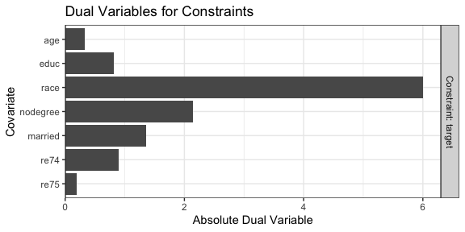

optweight contains functions to estimate stable balancing weights that balance covariates up to given thresholds. It solves a convex optimization problem to minimize a function of the weights that captures their variability (or divergence from a set of base weights). This is the method described in Zubizarreta (2015), Källberg and Waernbaum (2023), and Wang and Zubizarreta (2020). optweight extends the method to multi-category, continuous, and multivariate treatments and provides a simple user interface and compatibility with the cobalt package for balance assessment. See vignette("optweight") for a more thorough description of the package’s capabilities.
To install optweight, use the code below:
#CRAN version
install.packages("optweight")
#Development version
pak::pkg_install("ngreifer/optweight")Below is an example of estimating weights with optweight and assessing balance on the covariates with cobalt.
library("optweight")
library("cobalt")
data("lalonde")
# Estimate weights
ow <- optweight(treat ~ age + educ + race + nodegree + married +
re74 + re75,
data = lalonde,
estimand = "ATT",
tols = .01,
min.w = 0)
ow#> An optweight object
#> - number of obs.: 614
#> - norm minimized: "l2"
#> - sampling weights: present
#> - base weights: present
#> - treatment: 2-category
#> - estimand: ATT (focal: 1)
#> - covariates: age, educ, race, nodegree, married, re74, re75
# Information about the weights
summary(ow)#> Summary of weights
#> - Weight ranges:
#>
#> Min Max
#> treated 1 || 1.
#> control 0 |---------------------------| 5.588
#>
#> - Units with the 5 most extreme weights by group:
#>
#> 1 2 3 4 5
#> treated 1 1 1 1 1
#> 423 388 226 196 118
#> control 5.27 5.298 5.324 5.479 5.588
#>
#>
#> - Weight statistics:
#>
#> L2 L1 L∞ # Zeros
#> treated 0. 0. 0. 0
#> control 1.663 1.302 4.588 231
#>
#> - Effective Sample Sizes:
#>
#> Control Treated
#> Unweighted 429. 185
#> Weighted 113.9 185
# Covariate balance
bal.tab(ow)#> Balance Measures
#> Type Diff.Adj
#> age Contin. 0.01
#> educ Contin. 0.01
#> race_black Binary 0.01
#> race_hispan Binary -0.00
#> race_white Binary -0.01
#> nodegree Binary 0.01
#> married Binary -0.01
#> re74 Contin. -0.01
#> re75 Contin. 0.01
#>
#> Effective sample sizes
#> Control Treated
#> Unadjusted 429. 185
#> Adjusted 113.9 185We can see that all standardized mean differences are at or below .01 in absolute value, as requested using the tols argument. Because we set min.w = 0, some units received weights of 0, effectively dropping them from the sample (by default, the smallest weight allowed is \(10^{-8}\)).
We can use plot() to examine the dual variables for each constraint, which represent how active that constraint is at the optimal point. Highly active constraints affect the objective function value the most when their tolerances are changed.
plot(ow)
We can see that race has the highest dual variable; relaxing the constraint on race would yield the biggest improvement in effective sample size, while tightening its constraint would yield the biggest decrease in effective sample size.
The lower-level function optweight.fit() operates on the covariates and treatment variables directly. optweightMV() supports multivariate (i.e., multiple) treatments.
In addition to estimating balancing weights for estimating treatment effects, optweight can estimate sampling weights for generalizing an estimate to a new target population defined by covariate moments using optweight.svy(), which implements the methods described in Jackson, Rhodes, and Ouwens (2021) for matching-adjusted indirect comparison (MAIC).
To cite optweight, please use citation("optweight") to generate the correct reference. Be sure to include the version of the package. Please submit bug reports, questions, comments, or other issues to https://github.com/ngreifer/optweight/issues.